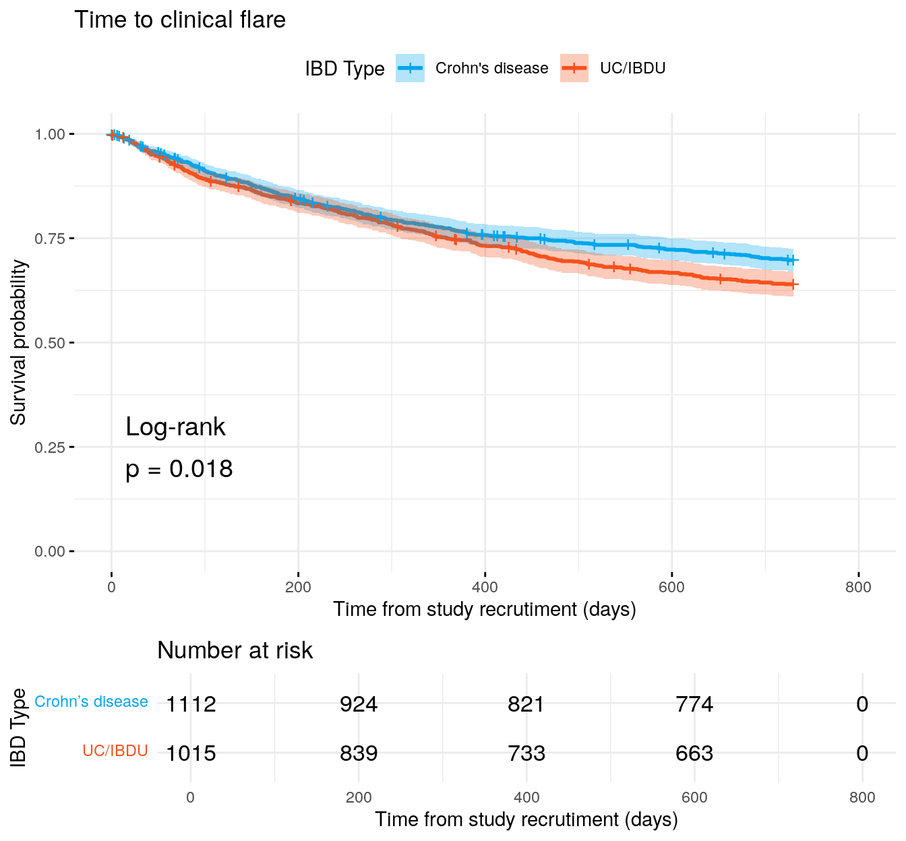
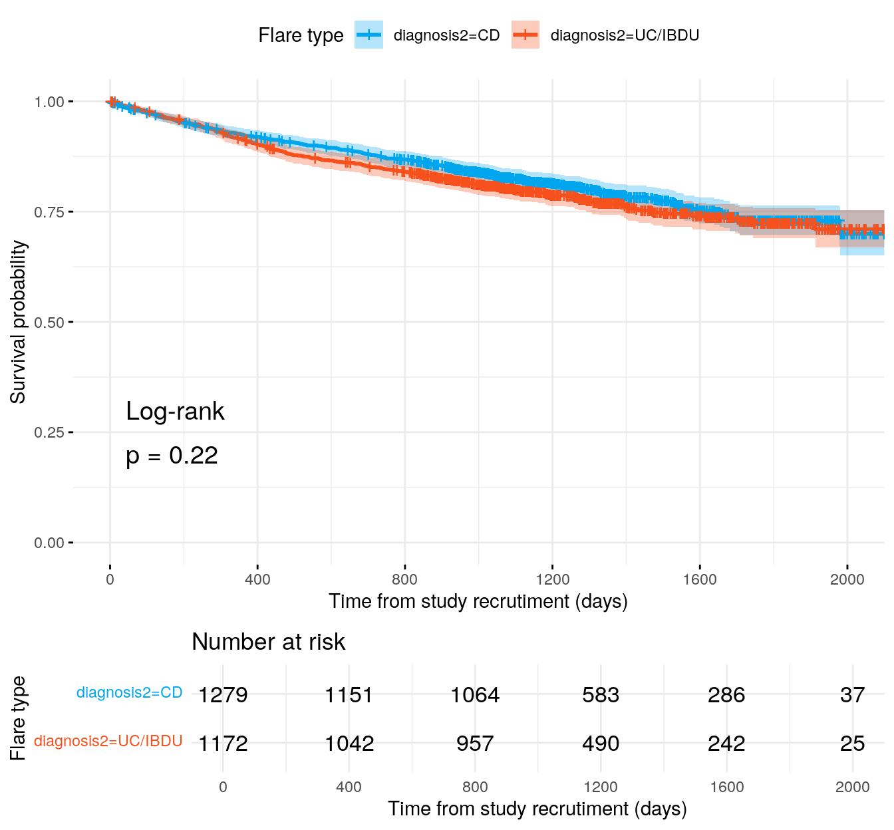
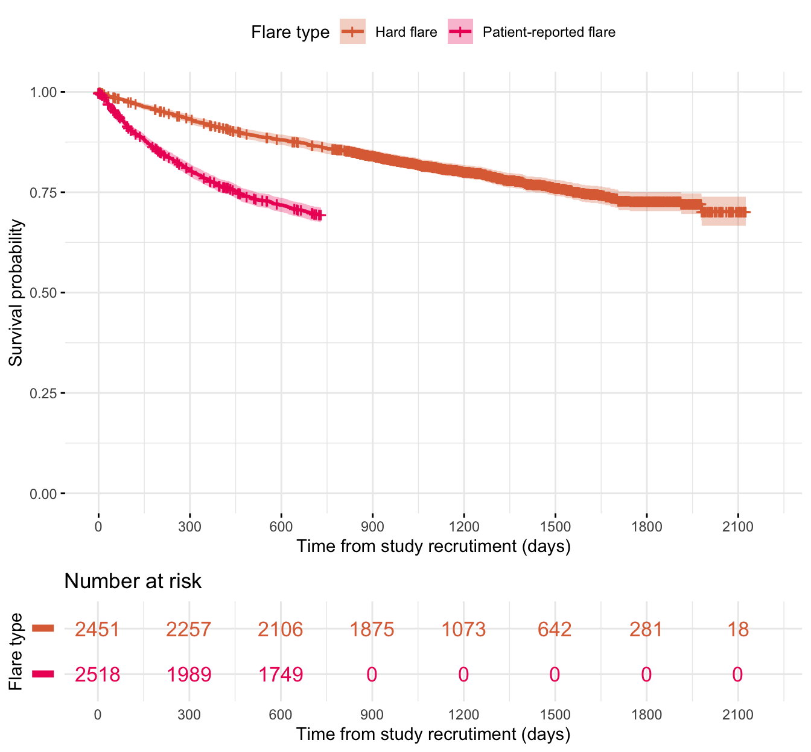

library(readxl)library(tidyverse)library(datefixR)library(survival)library(survminer)library(pander)library(coxme)library(finalfit)library(DescTools)library(gtsummary)# paths to PREdiCCt dataif(file.exists("/docker")){# If running in dockerdata.path<-"data/final/20221004/"redcap.path<-"data/final/20231030/"prefix<-"data/end-of-follow-up/"outdir<-"data/processed/"followup.dir<-"data/final/20240308/Followup/"}else{# Run on OS directlydata.path<-"/Volumes/igmm/cvallejo-predicct/predicct/final/20221004/"redcap.path<-"/Volumes/igmm/cvallejo-predicct/predicct/final/20231030/"prefix<-"/Volumes/igmm/cvallejo-predicct/predicct/end-of-follow-up/"outdir<-"/Volumes/igmm/cvallejo-predicct/predicct/processed/"followup.dir<-paste0("/Volumes/igmm/cvallejo-predicct/predicct/final/","20240308/Followup/")}demo<-readRDS(paste0(outdir, "demo-full.RDS"))demo$FC<-log(demo$FC)cox.summary<-function(fit){cat("Cox model summary:")fit%>%finalfit::fit2df(condense =FALSE)%>%knitr::kable( col.names =c("Variable","HR","Lower 95%","Upper 95%","P-value"), digits =4)%>%print()cat("\ ")cat("Diagnostics:\ ")cat('::: {.panel-tabset group="diagnostics"}\ ')cat("###### Proportional hazards assumption test \ ")cox.zph(fit)$table%>%knitr::kable( col.names =c("","Chi-squared statistic","DF","P-value"), digits =4)%>%print()cat("###### DF betas \ ")print(ggcoxdiagnostics(fit, type ="dfbeta"))cat("###### Martignale residuals \n")print(ggcoxdiagnostics(fit, type ="martingale", linear.predictions =TRUE))cat(":::")return()}
This page explores soft and hard flares. Survival curves are compared across diseases, and soft and hard flares are compared directly.
Response rates
As clinical are largely derived from patient completed questionnaires, it is worthwhile to first consider how questionnaires were completed for each month.
As should be expected, there is a small degree of attrition of responses over time (Figure 1). However, there is a large increase at the end of followup (M24) as additional communications were sent which encouraged the completion of the final questionnaire.
Figure 1: Number of responses for each month of followup
Primary outcome: First clinical flare
Code
flares<-read_xlsx(paste0(followup.dir, "all-flares.xlsx"), na =".", sheet =1)%>%select(ParticipantNo, softflare, softflare_time, hardflare, hardflare_time)flare.df<-merge(demo, flares, by ="ParticipantNo")
For clinical flares, a clinical flare is primarily defined by a subject reporting their disease as uncontrolled. The time of the flare is given by the date the subject reported their symptoms worsening.
If a date for when the symptoms worsened is given, but the subject did not answer if their disease was uncontrolled, it is assumed their disease is not controlled (in other words, it is assumed a clinical flare occurred).
If a subject reported their disease as being uncontrolled, but did not give a date for the worsening of their symptoms, then the earliest date given for either an IBD outpatient appointment, emergency hospital admission, call with their IBD care team, or surgery in the questionnaire response was used. If none of these dates were provided then the date of the questionnaire response was used instead.
If a hard flare occurs prior to a clinical flare then the clinical flare is assumed to occur on the same date as the hard flare.
A complete description of the steps taken to calculate clinical flares is outlined in the below drop-down section.
Steps for calculating clinical flares
If date of flare is before date of entry to study, then delete flare date and recode diseasecontrolled as 1.
If flare date is after the questionnaire date (I.E in the future), reset flare date to questionnaire date.
If questionnaire completed after date of withdrawal, remove.
If date of flare is >2 years after entry, censor clinical flare at 2 years.
Time is earliest of flare time or end of follow up, from entry date.
All data censored at 2 years.
Including the hard flares (hard flare data are much more straightforward, flare=diseaseflareyn and flare date=firstflarestartdate from EOS data)
If both datasets say no flare, clinical flare is no and follow up time from hard flare <= 2 years, softflare time is longest of questionnaire and hard flare times
If both datasets say no flare, clinical flare is no and follow up time from hard flare > 2 years, softflare time is 2 years
If no flare in questionnaires, but hard flare reported before 2 years of follow up, take hard flare data
If no flare in questionnaires, but hard flare reported after 2 years, softflare is no and softflare time =2 years
If flare in questionnaire and no hard flare, softflare from questionnaire data
If flare in questionnaire and also hard flare, take the earliest time
If questionnaire data is missing and no hard flare, clinical flare is no and time is earliest of hard flare follow up and 2 years
If questionnaire data is missing and hard flare reported within 2 years, softflare taken from hard flare data
If questionnaire data is missing and hard flare reported after 2 years then softflare is no and time is 2 years
Otherwise if questionnaire data is not missing and hardflare is, then softflare taken from questionnaire data
All times are taken from the earliest reported flare.
Code
fit<-flare.df%>%drop_na(cat)%>%survfit(Surv(softflare_time, softflare)~diagnosis2, data =.)p<-ggsurvplot(fit, data =flare.df, conf.int =TRUE, pval =TRUE, pval.method =TRUE, ggtheme =theme_minimal(), risk.table =TRUE, legend.title ="IBD Type", legend.labs =c("Crohn's disease", "UC/IBDU"), palette =c("#00A6ED", "#F6511D"), xlab ="Time from study recrutiment (days)", title ="Time to clinical flare")p

Figure 2: Kaplan-Meier curves for clinical flares stratified by IBD type.
Secondary outcome: first hard flare
Disease flares been reported by clinical care teams instead of being reported by subjects themselves.
Code
fit<-survfit(Surv(hardflare_time, hardflare)~diagnosis2, data =flare.df)p<-ggsurvplot(fit, data =flare.df, conf.int =TRUE, pval =TRUE, pval.method =TRUE, ggtheme =theme_minimal(), risk.table =TRUE, palette =c("#00A6ED", "#F6511D"), xlab ="Time from study recrutiment (days)", legend.title ="Flare type", break.time.by =400)print(p)

Comparison of hard and clinical flares
Code
flare.comb<-rbind(data.frame(ParticipantNo =flares$ParticipantNo, Cens =flares$hardflare, time =flares$hardflare_time, type ="Hard flare"),data.frame(ParticipantNo =flares$ParticipantNo, Cens =flares$softflare, time =flares$softflare_time, type ="Clinical flare"))flare.comb<-flare.comb%>%drop_na(Cens, time)flare.comb$type<-factor(flare.comb$type, levels =c("Hard flare","Clinical flare"))fit<-survfit(Surv(time, Cens)~type, data =flare.comb)p<-ggsurvplot(fit, data =flare.comb, conf.int =TRUE, pval =FALSE, pval.method =FALSE, ggtheme =theme_minimal(), risk.table =TRUE, palette =c("#4a938e", "#e493a3"), xlab ="Time from study recrutiment (days)", legend.title ="Flare type", legend.labs =c("Hard flare", "Clinical flare"), tables.y.text =FALSE, tables.col ="strata", break.time.by =300, xlim =c(0, 2200))cairo_pdf("plots/flare-comparison.pdf", width =7, height =7)pinvisible(dev.off())saveRDS(p, paste0(outdir, "flare-comparison.RDS"))p

Figure 3: Survival curves for soft and hard flares.
---title: "Flare overview"author: - name: "Nathan Constantine-Cooke" corresponding: true url: https://scholar.google.com/citations?user=2emHWR0AAAAJ&hl=en&oi=ao affiliations: - ref: CGEM - ref: HGUbibliography: Survival.bib ---## Introduction```{R}#| message: falselibrary(readxl)library(tidyverse)library(datefixR)library(survival)library(survminer)library(pander)library(coxme)library(finalfit)library(DescTools)library(gtsummary)# paths to PREdiCCt dataif (file.exists("/docker")) { # If running in docker data.path <-"data/final/20221004/" redcap.path <-"data/final/20231030/" prefix <-"data/end-of-follow-up/" outdir <-"data/processed/" followup.dir <-"data/final/20240308/Followup/"} else { # Run on OS directly data.path <-"/Volumes/igmm/cvallejo-predicct/predicct/final/20221004/" redcap.path <-"/Volumes/igmm/cvallejo-predicct/predicct/final/20231030/" prefix <-"/Volumes/igmm/cvallejo-predicct/predicct/end-of-follow-up/" outdir <-"/Volumes/igmm/cvallejo-predicct/predicct/processed/" followup.dir <-paste0("/Volumes/igmm/cvallejo-predicct/predicct/final/","20240308/Followup/")}demo <-readRDS(paste0(outdir, "demo-full.RDS"))demo$FC <-log(demo$FC)cox.summary <-function(fit) {cat("Cox model summary:") fit %>% finalfit::fit2df(condense =FALSE) %>% knitr::kable(col.names =c("Variable","HR","Lower 95%","Upper 95%","P-value" ),digits =4 ) %>%print()cat("\ ")cat("Diagnostics:\ ")cat('::: {.panel-tabset group="diagnostics"}\ ')cat("###### Proportional hazards assumption test \ ")cox.zph(fit)$table %>% knitr::kable(col.names =c("","Chi-squared statistic","DF","P-value" ),digits =4 ) %>%print()cat("###### DF betas \ ")print(ggcoxdiagnostics(fit, type ="dfbeta"))cat("###### Martignale residuals \n")print(ggcoxdiagnostics(fit, type ="martingale", linear.predictions =TRUE))cat(":::")return()}```This page explores soft and hard flares. Survival curves are compared acrossdiseases, and soft and hard flares are compared directly. ## Response ratesAs clinical are largely derived from patient completed questionnaires, it isworthwhile to first consider how questionnaires were completed for each month. As should be expected, there is a small degree of attrition of responses overtime (@fig-responses). However, there is a large increase at the end offollowup (M24) as additional communications were sent which encouraged thecompletion of the final questionnaire. ```{R}#| label: fig-responses#| fig-cap: "Number of responses for each month of followup"monthly <-read_xlsx(paste0(data.path, "Followup/monthlyQ.xlsx"))monthly %>%mutate(Q_month =paste0("M", Q_month)) %>%ggplot(aes(x =factor(Q_month, levels =paste0("M", seq(1, 24))))) +geom_bar(fill ="#3F88C5", color ="#426B93" ) +theme_minimal() +ylab ("Responses") +xlab("Month")```## Primary outcome: First clinical flare```{R}#| warning: falseflares <-read_xlsx(paste0(followup.dir, "all-flares.xlsx" ),na =".",sheet =1) %>%select(ParticipantNo, softflare, softflare_time, hardflare, hardflare_time)flare.df <-merge(demo, flares, by ="ParticipantNo")```For clinical flares, a clinical flare is primarily defined by a subject reporting theirdisease as uncontrolled. The time of the flare is given by the date the subjectreported their symptoms worsening. If a date for when the symptoms worsened is given, but the subject did notanswer if their disease was uncontrolled, it is assumed their disease is notcontrolled (in other words, it is assumed a clinical flare occurred).If a subject reported their disease as being uncontrolled, but did not give adate for the worsening of their symptoms, then the earliest date given foreither an IBD outpatient appointment, emergency hospital admission, call withtheir IBD care team, or surgery in the questionnaire response was used. If noneof these dates were provided then the date of the questionnaire response wasused instead. If a hard flare occurs prior to a clinical flare then the clinical flare is assumed tooccur on the same date as the hard flare.A complete description of the steps taken to calculate clinical flares is outlinedin the below drop-down section. <details><summary> Steps for calculating clinical flares </summary>1. If date of flare is before date of entry to study, then delete flare date and recode diseasecontrolled as 1.2. If flare date is after the questionnaire date (I.E in the future), reset flare date to questionnaire date.3. If questionnaire completed after date of withdrawal, remove.4. If date of flare is >2 years after entry, censor clinical flare at 2 years.5. Time is earliest of flare time or end of follow up, from entry date.6. All data censored at 2 years.7. Including the hard flares (hard flare data are much more straightforward, flare=`diseaseflareyn` and flare date=`firstflarestartdate` from EOS data) * If both datasets say no flare, clinical flare is no and follow up time from hard flare <= 2 years, softflare time is longest of questionnaire and hard flare times * If both datasets say no flare, clinical flare is no and follow up time from hard flare > 2 years, softflare time is 2 years * If no flare in questionnaires, but hard flare reported before 2 years of follow up, take hard flare data * If no flare in questionnaires, but hard flare reported after 2 years, softflare is no and softflare time =2 years * If flare in questionnaire and no hard flare, softflare from questionnaire data * If flare in questionnaire and also hard flare, take the earliest time * If questionnaire data is missing and no hard flare, clinical flare is no and time is earliest of hard flare follow up and 2 years * If questionnaire data is missing and hard flare reported within 2 years, softflare taken from hard flare data * If questionnaire data is missing and hard flare reported after 2 years then softflare is no and time is 2 years * Otherwise if questionnaire data is not missing and hardflare is, then softflare taken from questionnaire dataAll times are taken from the earliest reported flare.</details>```{R}#| label: fig-km-soft#| fig-cap: "Kaplan-Meier curves for clinical flares stratified by IBD type."#| fig-height: 6.5fit <- flare.df %>%drop_na(cat) %>%survfit(Surv(softflare_time, softflare) ~ diagnosis2, data = .)p <-ggsurvplot(fit,data = flare.df,conf.int =TRUE,pval =TRUE,pval.method =TRUE,ggtheme =theme_minimal(),risk.table =TRUE,legend.title ="IBD Type",legend.labs =c("Crohn's disease", "UC/IBDU"),palette =c("#00A6ED", "#F6511D"),xlab ="Time from study recrutiment (days)",title ="Time to clinical flare")p```## Secondary outcome: first hard flareDisease flares been reported by clinical care teams instead of beingreported by subjects themselves.```{R}#| fig-height: 6.5fit <-survfit(Surv(hardflare_time, hardflare) ~ diagnosis2, data = flare.df)p <-ggsurvplot(fit,data = flare.df,conf.int =TRUE,pval =TRUE,pval.method =TRUE,ggtheme =theme_minimal(),risk.table =TRUE,palette =c("#00A6ED", "#F6511D"),xlab ="Time from study recrutiment (days)",legend.title ="Flare type",break.time.by =400)print(p)```## Comparison of hard and clinical flares ```{R}#| fig-height: 6.5#| label: fig-comb-comp#| fig-cap: "Survival curves for soft and hard flares."flare.comb <-rbind(data.frame(ParticipantNo = flares$ParticipantNo,Cens = flares$hardflare,time = flares$hardflare_time,type ="Hard flare"),data.frame(ParticipantNo = flares$ParticipantNo,Cens = flares$softflare,time = flares$softflare_time,type ="Clinical flare") )flare.comb <- flare.comb %>%drop_na(Cens, time)flare.comb$type <-factor(flare.comb$type,levels =c("Hard flare","Clinical flare"))fit <-survfit(Surv(time, Cens) ~ type, data = flare.comb)p <-ggsurvplot(fit,data = flare.comb,conf.int =TRUE,pval =FALSE,pval.method =FALSE,ggtheme =theme_minimal(),risk.table =TRUE,palette =c("#4a938e", "#e493a3"),xlab ="Time from study recrutiment (days)",legend.title ="Flare type",legend.labs =c("Hard flare", "Clinical flare"),tables.y.text =FALSE,tables.col ="strata",break.time.by =300,xlim =c(0, 2200)) cairo_pdf("plots/flare-comparison.pdf", width =7, height =7)pinvisible(dev.off())saveRDS(p, paste0(outdir, "flare-comparison.RDS"))p``````{R}#| label: tbl-comb-comp#| tbl-cap: "Survival rates after two years of follow-up."fit %>%tbl_survfit(times =365*2,label ="Flare type",statistic ="{estimate} ({conf.low}, {conf.high})",label_header ="**2-year survival (95% CI)**" )``````{R}#| label: tbl-comb-comp-cd#| tbl-cap: "Survival rates after two years of follow-up for Crohn's disease only."flare.comb.cd <- flare.comb %>%merge(demo[, c("ParticipantNo", "diagnosis2")], by ="ParticipantNo") %>%filter(diagnosis2 =="CD") %>%select(-diagnosis2)fit.cd <-survfit(Surv(time, Cens) ~ type, data = flare.comb.cd)fit.cd %>%tbl_survfit(times =365*2,label ="Flare type",statistic ="{estimate} ({conf.low}, {conf.high})",label_header ="**2-year survival (95% CI)**" )``````{R}#| label: tbl-comb-comp-uc#| tbl-cap: "Survival rates after two years of follow-up for ulcerative colitis/IBDU only."flare.comb.uc<- flare.comb %>%merge(demo[, c("ParticipantNo", "diagnosis2")], by ="ParticipantNo") %>%filter(diagnosis2 =="UC/IBDU") %>%select(-diagnosis2)fit.uc <-survfit(Surv(time, Cens) ~ type, data = flare.comb.uc)fit.uc %>%tbl_survfit(times =365*2,label ="Flare type",statistic ="{estimate} ({conf.low}, {conf.high})",label_header ="**2-year survival (95% CI)**" )``````{R}#| include: falsecount <-0for (id inunique(flare.comb$ParticipantNo)) { temp <-subset(flare.comb,ParticipantNo == id)if (nrow(temp) ==2) {if (all(temp$Cens ==1)) {if (temp[1, "time"] == temp[2, "time"]) { count <- count +1 } } }}``````{R}saveRDS(flare.df, paste0(outdir, "flares-overview.RDS"))```## Reproduction and reproducibility {.appendix}<details class = "appendix"> <summary> Session info </summary>```{R Session info}#| echo: falsepander::pander(sessionInfo())```</details>Licensed by <a href="https://creativecommons.org/licenses/by/4.0/">CC BY</a> unless otherwise stated.